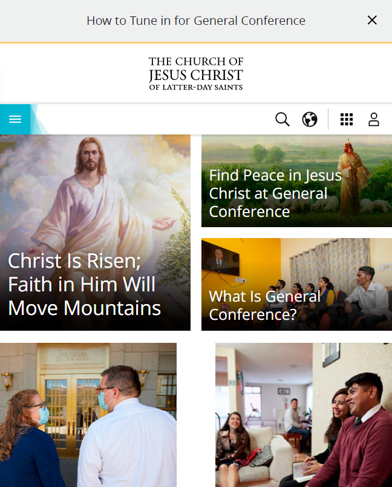
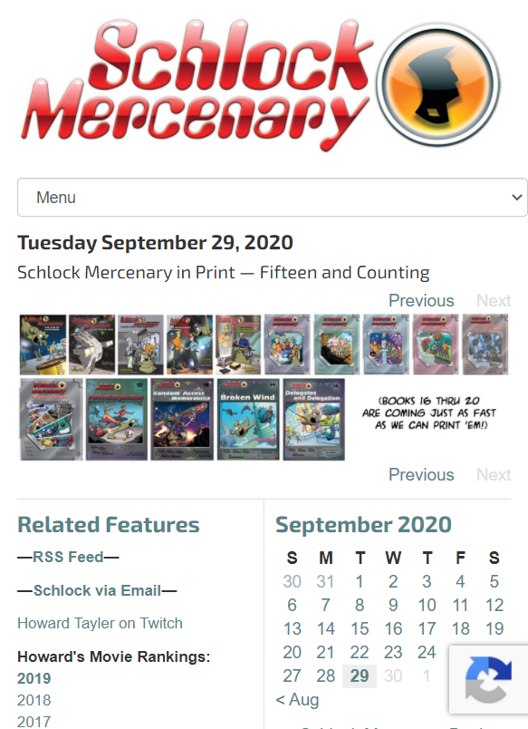

Visual Hierarchy
WOOT
Link to SiteVisual hierarchy is the principle of arranging elements to show their order of importance through size and relative spacing.
Woot was initially designed for a "one deal a day" format. While it has expanded that approach (particularly after being acquired by Amazon), the layout still makes it clear that they prioritize the daily deals by placing them in a large section at the top of the window.
Fitt's Law
The Church of Jesus Christ of Latter-Day Saints
Link to SiteFitts' law states that the amount of time required for a person to move a pointer (e.g., mouse cursor) to a target area is a function of the distance to the target divided by the size of the target. Thus, the longer the distance and the smaller the target's size, the longer it takes.
The church's website makes it easy to get to any of the featured articles by making them large and easily selected.
White Space and Clean Design
Schlock Mercenary
Link to SiteEnhancing the user's experience through the process of adding padding and space between items—particularly items of contrasting nature—to avoid bombarding the user with information and further enhance the discrete nature of the information presented.
The Schlock Mercenary site uses a trim design with plenty of whitespace that allows the calendar (where you can select any day's comic you desire) to stand out, while not foisting other items in your way.